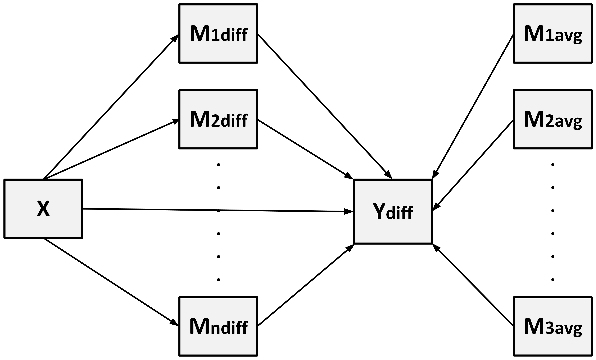

Introduction
The GenerateModelP function dynamically generates a
Structural Equation Model (SEM) formula to analysis parallel mediation
for ‘lavaan’ based on the prepared dataset. This document explains the
mathematical principles and the structure of the generated model.

1.2 Difference Model for
Taking the difference between the two conditions:
Define: -
:
Difference in intercepts. -
:
Difference in residuals.
Substitute mediator difference and average: 1. Mediator
difference:
-
Mediator average:
Substitute
and
into the equation:
Define: -
:
Average effect of the
-th
mediator. -
:
Difference in the effect of the
-th
mediator.
The final equation becomes:
1.3 Regression for
Each mediator difference
is modeled as:
Where: -
:
Intercept term for the
-th
mediator difference. -
:
Residual for
.
2. Indirect Effects
For each mediator
,
the indirect effect is defined as:
Where: -
:
Effect of the independent variable on mediator
.
-
:
Average effect of mediator
on the dependent variable.
The total indirect effect is:
The contrast between indirect effects of two mediators
and
is:
3. Total Effect
The total effect combines the direct effect and the total indirect
effect:
Where
is the direct effect of the independent variable on the dependent
variable.
4. Comparison of Indirect Effects
When there are multiple mediators
(),
comparing their indirect effects provides insights into the relative
influence of each mediator. This section details the formulas and
interpretations for such comparisons.
4.1 Indirect Effect Definition
For a mediator
,
the indirect effect is defined as:
Where: -
:
Effect of the independent variable on mediator
.
-
:
Average effect of mediator
on the dependent variable.
4.2 Comparing Indirect Effects
To compare the indirect effects of two mediators
and
,
we calculate the contrast:
Interpretation
-
:
- Mediator
has a stronger indirect effect than
.
-
:
- Mediator
has a stronger indirect effect than
.
-
:
- Both mediators contribute equally to the indirect effect.
5. C1- and C2-Measurement Coefficients
To compute C1- and C2-measurement coefficients
and
,
consider two mediators
and
:
From the difference model:
Define: -
:
Average effect. -
:
Difference in effect.
5.2 C2-Measurement Coefficients
The C2-measurement coefficient
is defined as:
Substitute
and
:
Thus,
is the effect of
under Condition 2.
5.3 C1-Measurement Coefficients
The C1-measurement coefficient
is defined as:
Substitute
and
:
Thus,
is the effect of
under Condition 1.
Additional Interpretation: The coefficient
reflects the moderating effect of the within-subject variable X,
capturing how the mediator’s influence differs across conditions.
6. Summary of Regression Equations
This section summarizes all the regression equations used in the
analysis, including the difference model, indirect effects, mediator
comparisons, and C1- and C2-measurement coefficients.
6.1 Difference Model
6.2 Defined parameters
Summary
By combining these equations: 1. The difference model
decomposes into contributions from mediator differences
()
and averages
().
2. Indirect effects and their contrasts provide insights into the
mediators’ relative importance. 3. C1- and C2-measurement coefficients
quantify the effects in specific conditions.